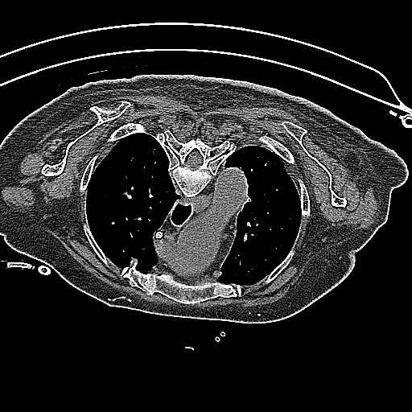
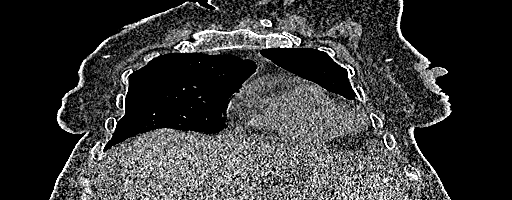
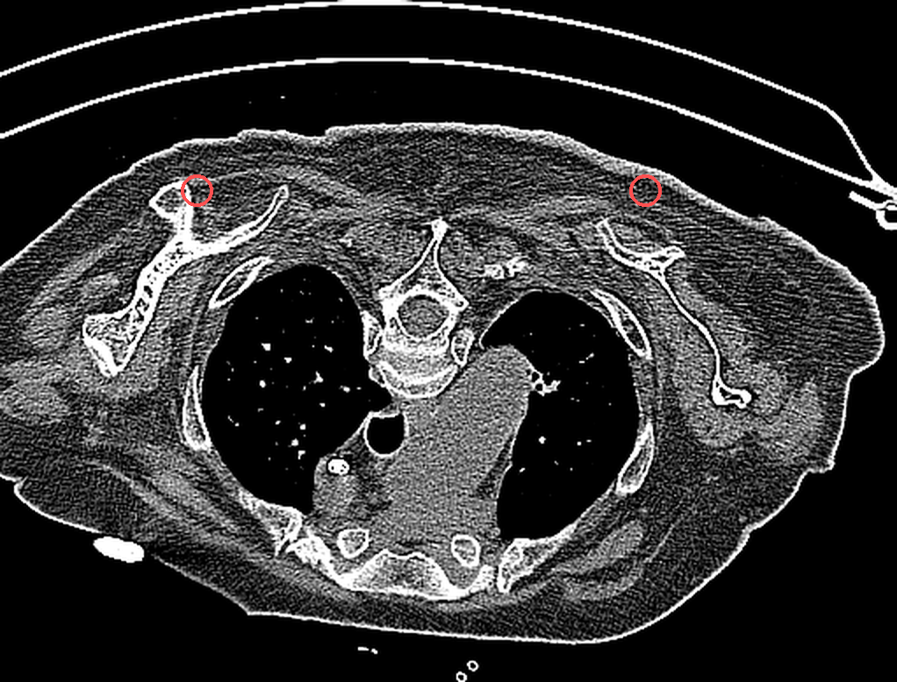

Dataset
 Axial
Axial
 Coronal
Coronal
 Sagittal
Sagittal
Six Spatial Reasoning Categories
01
Laterality & Bilateral Symmetry
02
Longitudinal (Vertical) Position
03
Anterior-Posterior (Depth) Relations
04
Medial-Lateral Orientation (Centricity)
05
Adjacency & Containment
06
Spatial Extent & Boundaries
Sample QA Pairs

Anterior-PosteriorWhere is the loculated cystic lesion located relative to the ascending aorta?
In the anterior neighborhood of the ascending aorta.

LateralityIs the consolidation area found in the right or left lung?
In the right lung.

Adjacency & ContainmentWhere are space-occupying lesions located in relation to the ribs?
Anteriorly at the sternal junctions of the 2nd and 3rd ribs.